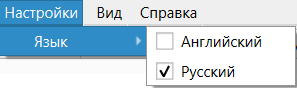
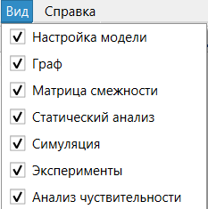
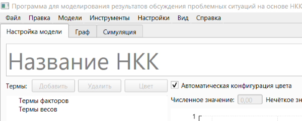

1. To switch the language, use the "Language" submenu of the "Settings" menu. Switching between Russian and English is available.

2. Using the "View" menu, you can disable the display of individual tabs.

